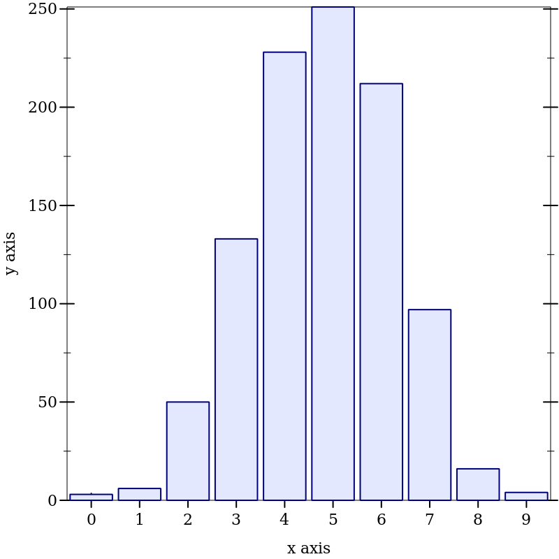

1 Introduction
The prob language implements two techniques for probabilistic programming. One is an “MH” sampler based on the log-replay technique of [Bher]. The other is a tree exploration based on [EPP], using delimited continuations.
1.1 Log-replay sampler
Here is a simple function that uses flip:
> (define (sum-n-flips n) (if (zero? n) 0 (+ (if (flip) 1 0) (sum-n-flips (sub1 n)))))
We can define a sampler for a program that uses sum-n-flips thus:
> (define s-flips (mh-sampler (sum-n-flips 10)))
Calling the sampler produces a sample, but it also records its choices, so that subsequent calls can explore similar sequences of choices. We can use verbose? to see the choices as they’re made. (Each line ends with a series of numbers that identifies the “address” of the call to flip; see [Bher] for details.)
> (parameterize ((verbose? #t)) (s-flips))
- NEW (flip 1/2): (36 39)
- NEW (flip 1/2): (36 37 39)
- NEW (flip 1/2): (36 37 37 39)
- NEW (flip 1/2): (36 37 37 37 39)
- NEW (flip 1/2): (36 37 37 37 37 39)
- NEW (flip 1/2): (36 37 37 37 37 37 39)
- NEW (flip 1/2): (36 37 37 37 37 37 37 39)
- NEW (flip 1/2): (36 37 37 37 37 37 37 37 39)
- NEW (flip 1/2): (36 37 37 37 37 37 37 37 37 39)
- NEW (flip 1/2): (36 37 37 37 37 37 37 37 37 37 39)
4
If we run the sampler again, we see that one of the choices is deleted, and the rest are reused.
> (parameterize ((verbose? #t)) (s-flips))
perturb: removing (36 37 37 37 39)
- REUSED (flip 1/2): (36 39)
- REUSED (flip 1/2): (36 37 39)
- REUSED (flip 1/2): (36 37 37 39)
- NEW (flip 1/2): (36 37 37 37 39)
- REUSED (flip 1/2): (36 37 37 37 37 39)
- REUSED (flip 1/2): (36 37 37 37 37 37 39)
- REUSED (flip 1/2): (36 37 37 37 37 37 37 39)
- REUSED (flip 1/2): (36 37 37 37 37 37 37 37 39)
- REUSED (flip 1/2): (36 37 37 37 37 37 37 37 37 39)
- REUSED (flip 1/2): (36 37 37 37 37 37 37 37 37 37 39)
3
We can use repeat and hist to visualize the sampler results:
> (hist (repeat s-flips 1000)) 
Here’s a program that uses mem to memoize a flip:
> (define s-mem (mh-sampler (define mflip (mem (lambda (i) (if (flip) 1 0)))) (for/sum ([i 10]) (mflip (modulo i 5)))))
When we apply this sampler, it makes fresh choices for the first five flips, then reuses the memoized choices for the second five flips.
> (parameterize ((verbose? #t)) (s-mem))
- NEW (flip 1/2): (49 (mem (0) (48)))
- NEW (flip 1/2): (49 (mem (1) (48)))
- NEW (flip 1/2): (49 (mem (2) (48)))
- NEW (flip 1/2): (49 (mem (3) (48)))
- NEW (flip 1/2): (49 (mem (4) (48)))
- MEMOIZED (flip 1/2): (49 (mem (0) (48)))
- MEMOIZED (flip 1/2): (49 (mem (1) (48)))
- MEMOIZED (flip 1/2): (49 (mem (2) (48)))
- MEMOIZED (flip 1/2): (49 (mem (3) (48)))
- MEMOIZED (flip 1/2): (49 (mem (4) (48)))
10
Note: the call to mem must happen in the dynamic extent of the mh-sampler; otherwise, the wrong kind of memoization will be used.
1.2 Enumeration via Delimited Continuations
The second technique uses delimited continuations to make a probability-weighted tree of possibilities.
> (enumerate (sum-n-flips 10))
'((0 0.0009765625)
(1 0.009765625)
(2 0.0439453125)
(3 0.1171875)
(4 0.205078125)
(5 0.24609375)
(6 0.205078125)
(7 0.1171875)
(8 0.0439453125)
(9 0.009765625)
(10 0.0009765625))
This agrees with the results produced by the binomial distribution:
> (enumerate (binomial 10 1/2))
'((0 0.0009765625)
(1 0.009765625)
(2 0.0439453125)
(3 0.1171875)
(4 0.205078125)
(5 0.24609375)
(6 0.205078125)
(7 0.1171875)
(8 0.0439453125)
(9 0.009765625)
(10 0.0009765625))
The enumerate form can be used to approximate countable distributions by using a limit parameter; the tree search stops when the distribution is correct to within the given limit. (FIXME: is this description quite right?)
> (define (geom) (if (flip) 0 (add1 (geom))))
> (enumerate (geom) #:limit 1e-06)
'((0 0.500000476837613)
(1 0.2500002384188065)
(2 0.12500011920940324)
(3 0.06250005960470162)
(4 0.03125002980235081)
(5 0.015625014901175405)
(6 0.007812507450587702)
(7 0.003906253725293851)
(8 0.0019531268626469256)
(9 0.0009765634313234628)
(10 0.0004882817156617314)
(11 0.0002441408578308657)
(12 0.00012207042891543285)
(13 6.103521445771642e-05)
(14 3.051760722885821e-05)
(15 1.5258803614429106e-05)
(16 7.629401807214553e-06)
(17 3.8147009036072765e-06)
(18 1.9073504518036383e-06)
(19 9.536752259018191e-07))
Note that the probabilities are not quite the negative powers of 2, because they are normalized after the search stops at 19. There is an option to skip normalization, however:
> (enumerate (geom) #:limit 1e-06 #:normalize? #f)
'((0 0.5)
(1 0.25)
(2 0.125)
(3 0.0625)
(4 0.03125)
(5 0.015625)
(6 0.0078125)
(7 0.00390625)
(8 0.001953125)
(9 0.0009765625)
(10 0.00048828125)
(11 0.000244140625)
(12 0.0001220703125)
(13 6.103515625e-05)
(14 3.0517578125e-05)
(15 1.52587890625e-05)
(16 7.62939453125e-06)
(17 3.814697265625e-06)
(18 1.9073486328125e-06)
(19 9.5367431640625e-07))
The enumerate form supports memoization through mem:
> (enumerate (define f (mem (lambda (n) (if (flip) 1 0)))) (list (f 1) (f 2) (f 1) (f 2))) '(((0 0 0 0) 0.25) ((0 1 0 1) 0.25) ((1 0 1 0) 0.25) ((1 1 1 1) 0.25))
The enumerate form also supports conditioning:
> (enumerate (define A (flip)) (define B (flip)) A #:when (or A B)) '((#f 0.3333333333333333) (#t 0.6666666666666666))
> (enumerate (define A (geom)) A #:when (< 20 A 30))
'((21 0.5009784735812133)
(22 0.25048923679060664)
(23 0.12524461839530332)
(24 0.06262230919765166)
(25 0.03131115459882583)
(26 0.015655577299412915)
(27 0.007827788649706457)
(28 0.003913894324853229)
(29 0.0019569471624266144))
Here’s an example from [EPP] that shows that this technique can detect miniscule probabilities that sampling might miss. We disable the limit to explore the tree fully, and we avoid normalizing the resulting probabilities by the acceptance rate of the condition.
> (enumerate (define (drop-coin?) (flip 0.9)) (define (drunk-flips n) (cond [(zero? n) #t] [(drop-coin?) 'failed] [else (and (flip) (drunk-flips (sub1 n)))])) (define A (drunk-flips 10)) (eq? A #t) #:when (not (eq? A 'failed)) #:normalize? #f ; Need to disable limit to detect #t case #:limit #f) '((#f 0.05263157894736328) (#t 9.765624999999978e-14))
Enumeration can be nested:
> (enumerate (define A (flip)) (define B (enumerate (define C (flip)) (define D (flip)) (or C D) #:when (or (and C D) A))) (list A B)) '(((#f ((#t 1.0))) 0.5) ((#t ((#f 0.25) (#t 0.75))) 0.5))
But a memoized function must not be used outside the context that creates it, otherwise an error is raised:
> (enumerate (define D (enumerate (mem flip))) (define f+prob (car D)) (define f (car f+prob)) (f)) mem: memoized function escaped its creating context
function: #<procedure:flip>
arguments: '()
The technique of reification and reflection discussed in [EPP] can reduce the complexity of enumerating probabilities. Reification is done using enumerate and reflection with discrete-from-enumeration. The following pair of programs shows an exponential search tree reduced to a linear one using reification and reflection.
> (define (xor a b) (and (or a b) (not (and a b))))
> (define (xor-flips n) (if (zero? n) #t (xor (flip) (xor-flips (sub1 n)))))
> (time (enumerate (xor-flips 12))) cpu time: 1524 real time: 1526 gc time: 444
'((#f 0.5) (#t 0.5))
> (define (xor-flips* n) (if (zero? n) #t (let ([r (discrete-from-enumeration (enumerate (xor-flips* (sub1 n))))]) (xor (flip) r))))
> (time (enumerate (xor-flips* 12))) cpu time: 0 real time: 1 gc time: 0
'((#f 0.5) (#t 0.5))
> (time (enumerate (xor-flips* 120))) cpu time: 36 real time: 36 gc time: 8
'((#f 0.5) (#t 0.5))
Another technique is to delay choices until they are needed. The letlazy function in [EPP] is subsumed by mem. Here’s an example.
> (define (flips-all-true n) (enumerate (define Flips (for/list ([i n]) (flip))) (andmap values Flips)))
> (time (flips-all-true 12)) cpu time: 1124 real time: 1130 gc time: 48
'((#f 0.999755859375) (#t 0.000244140625))
The search tree has 212 paths, but most of them are redundant because when examining the flip results, we stop looking as soon as we see a #f. By making flips lazy, we only explore a flip when it is actually relevant.
> (define (flips-all-true* n) (enumerate (define LFlips (for/list ([i n]) (mem flip))) (andmap (lambda (f) (f)) LFlips)))
> (time (flips-all-true* 12)) cpu time: 4 real time: 0 gc time: 0
'((#f 0.999755859375) (#t 0.000244140625))